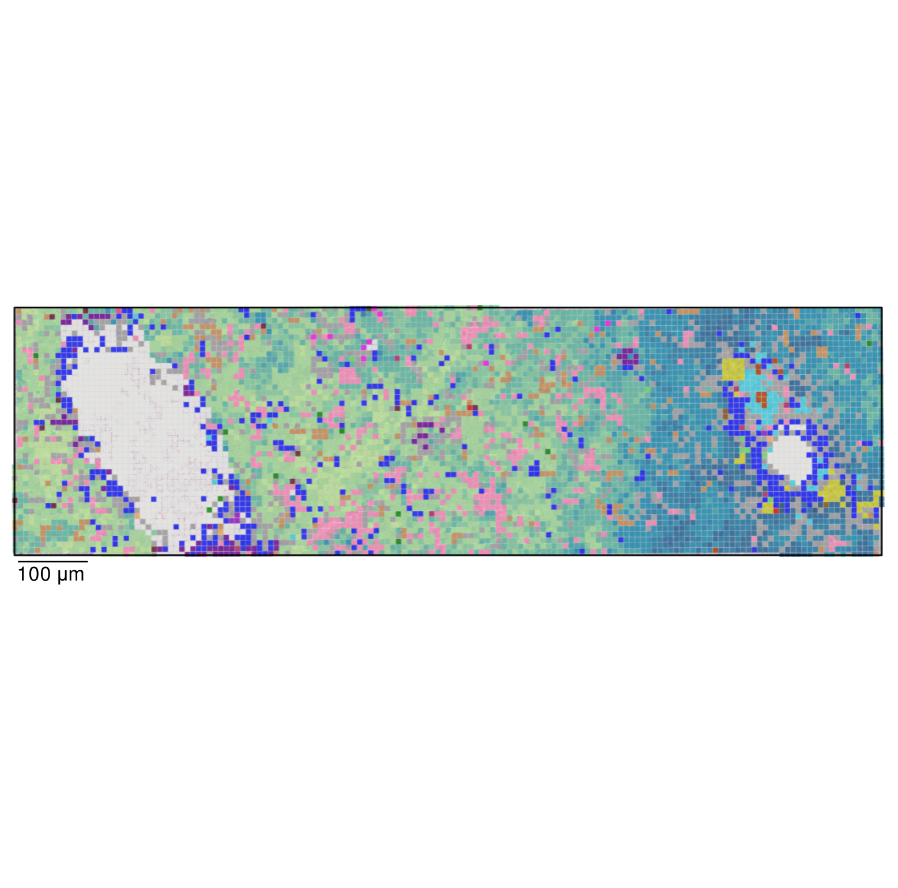
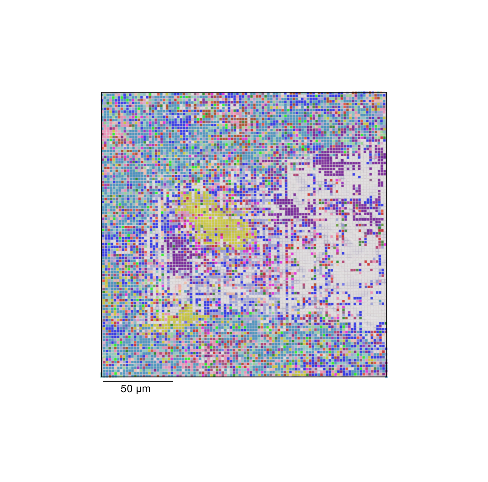

Interactive Shiny Apps
Region of interest with 8um bins
 Launch AppRegion of interest with 2um bins
 Launch AppData Deposits
As the Shiny apps linked above only show select regions of interest we have provided all data below. For viewing the bin annotation and expression interactively we would recommend downloading the Loupe Browser file and viewing in the Loupe Browser. For a reanalysis of all samples, we have provided Space Ranger outputs as well as FASTQ files.